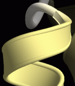
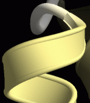
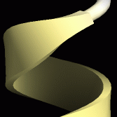
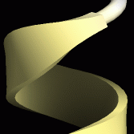

RibbonRenderer
Ribbon表示について¶
タンパク質専用のレンダラーで，蛋白質，ポリペプチドの主鎖をスプライン曲線を用いてリボン状に表現します．
- ヘリックスをリボン状
- シートを板状
- コイルをチューブ状
に表示する機能を持ちます．
さまざまなプロパティーがあり，表示を変更・調節することが可能です．
正しくリボン状に表示されるためには，タンパク質分子に対して二次構造が割り当てられている必要が有ります． 二次構造は通常ファイルの読み込み時に勝手に行われるので，特に気にする必要はないですが， 好きなように変更したりしたい場合や，再割り当てを手動で行いたい場合は，cuemol2/Prot2ndryStrを参照してください．
あと，RNA, DNAなどタンパク以外の鎖状ポリマーに対してribbon rendererを作成した場合は， 単にtube rendererと同様のチューブ状表示になります．
簡易スタイル指定による表示の変更¶
簡易スタイル指定により，良く使うribbon表示の設定を簡単に行うことが出来ます．
スタイルの概念については，cuemol2/Styleを参照してください．
Scene panelにて，ribbon rendererを右クリックしてcontext menuを表示させ，styleを選択すると， 簡易スタイルの一覧がメニューとして表示されます． メニュー項目を選択すると，対応するribbon rendererにスタイルが適用され表示が変わります．
- Default
- Defaultのribbon表示の設定．コイルは太めのチューブで，ヘリックス，シートは断面が四角い板状のリボンになる．(下図左)
- Fancy1
- Molscript風のribbon表示の設定．ヘリックスの内側と，シートの側面は，白っぽい色で塗られる．ヘリックスの断面はダンベル状になる．(下図中央)
- Round
- コイルは細めのチューブで，ヘリックス，シートは断面が楕円状の丸っこいリボンになる．(下図右)

プロパティーによる詳細な設定¶
以下では，主なプロパティーと，その設定GUIについて説明します．
共通設定 (Commonタブ)¶
- Section detail
- 断面方向のポリゴン分割数を指定する．大きい値を指定するほど細かく分割されて表示がきれいになるが，描画スピードは低下する．
- Axial detail
- 鎖方向のポリゴン分割数を指定する．大きい値を指定するほど細かく分割されて表示がきれいになるが，描画スピードは低下する．
- Smooth color
- 隣り合う残基間で色が異なる場合，ONだと残基間の着色がグラデーションになる(下図左)．OFFだと中央で色が変わるようになる(下図右)．

- Pivot atom name
- リボンやチューブが通るべき原子の名前を指定する．タンパクの場合defaultはCA（Cα炭素原子）になっており，通常変更する必要はない．
- Start/End type
- 末端の形状を指定する．sphereを指定すると球状に(下図左)，flat指定すると平らになる(下図中央)．noneを指定すると，末端のポリゴンは生成されず，穴が開いたようになる(下図右)．

{kind=link}
{kind=link}
{kind=link}
{kind=link}
{kind=link}
あと，Basic settingsとEdge linesは，他のrendererにもある共通の設定項目です．Edge linesについてはcuemol2/EdgeLines#rend_propsを参照してください．
ヘリックスに関する設定 (Helixタブ)¶
Helix Section¶
ヘリックス部分の断面等の形状に関する設定です．
- Type
- 断面の形状の種類を指定する．
下図左からElliptical（楕円形），Rectangle（四角），Round rectangle（角なし四角），Fancy（ダンベル型）


 
 - Back color
- 下図のようにヘリックスの内側の色を指定し変更できる．Offだと指定なしで内側も外側も同じ色になる．Defaultはoff．
- Width
- ヘリックスの厚さを指定．単位はÅ．
- Tuber
- ヘリックスの幅を指定．Widthの何倍にするかで指定する．
- Sharpness
- Typeにより意味が違ってくる．
Type=Round rectangleの場合は，長方形の角の取れ具合を指定する．1にするとほぼ角張った形状になるが，0に近いとより丸みを帯びた形状に．
Type=Fancyの場合は，ダンベル型の両端の円の大きさを指定する．0に近い値にすると厚さが薄くなりより縁が際立った形状になるが（下図左;値=0），0.5に近づくとRound rectに近い形状になる（下図中央;値=0.5）．0.5以上にすると（説明は難しいが）下図右(値=0.75)のような形状になる．


- Smoothness
- ０だとヘリックスがpivot atom（defaultはCα原子）の位置を通る曲線になるが，それ以下だとpivot atomを通らずによりなめらかな曲線になる．（この設定は厳密には断面の形状と関係ないが，便宜上ここに入っている）
{kind=link}
{kind=link}
{kind=link}
Helix Head¶
ヘリックスの終了部分(head)の形状に関する設定です．
- Type
- 形状の種類．
Round(滑らかに接続;下図左)，Flat(不連続;下図中央)，Arrow(矢型の形状;下図右)を指定する

ヘリックスで末端をarrowにすることはほとんどないだろう．
Arrow関係の設定については，後述の「シートに関する設定 (Sheetタブ)」参照． - Power
- 接続の滑らかさを指定する．
下図はTypeがroundの場合に，値を1, 1.5, 3と変化させた場合(roundの場合は1以下の値を指定しても意味がない)．
 


- Arrow height
- Typeがarrowの場合のみ有効．Arrowの高さを指定．後述の「シートに関する設定 (Sheetタブ)」参照．
- Arrow width
- Typeがarrowの場合のみ有効．Arrowの幅を指定．後述の「シートに関する設定 (Sheetタブ)」参照．
{kind=link}
{kind=link}
{kind=link}
Helix Tail¶
ヘリックスの開始部分(tail)の形状に関する設定です．
内容は，Helix Headと全く同じですが，ヘリックスの開始部分について適用されます．
シートに関する設定 (Sheetタブ)¶
ヘリックスに関する設定と同様の設定項目があります． 各設定の意味もヘリックスの場合とだいたい同じですので，前項「ヘリックスに関する設定」を参照ください．
以下では，シートで意味が異なってくる設定や，注意すべき設定についてのみ説明します．
- Back color
- シートの場合は，裏面の色ではなく，側面の色が指定色に変化します．
- Smoothness
- シートの場合は，0にするとうねりすぎるのでdefaultは0.5になっています（伸びたβシートになる）．ただし，側鎖を表示する場合等は，0.5だと側鎖が浮いたようになってしまうので0に変更したほうが良い．


- Arrowの設定
- SheetHead設定にあるTypeをArrowにすると，βシートの先端が矢状になります（SheetTail(末端)を矢状にすることはほぼ無いでしょう）．
この場合，SheetHead設定のPower値は矢の先端のとがり具合に影響します．下図右は0.5，中央は1，左は2の場合です．


- Arrow width
- 矢の先端部分の幅を指定します（下図参照）．100%にすると矢の幅はシート本体の幅の３倍になり，0%にすると幅はシート本体の幅と同じ（＝矢の先端部分なし）になります．
- Arrow height
- 矢の先端部分の高さを指定します（下図参照）．値を減少させると矢の先端部の高さが減少します．

{kind=link}
{kind=link}
コイルに関する設定 (Coilタブ)¶
コイル部分はHead/Tailの概念がないので，Section（断面形状）に関する設定項目しかありません． 各設定の意味はヘリックスの場合と同じです． 前項「ヘリックスに関する設定」のSectionについての部分を参照ください．